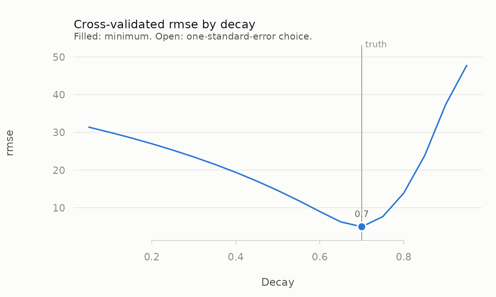
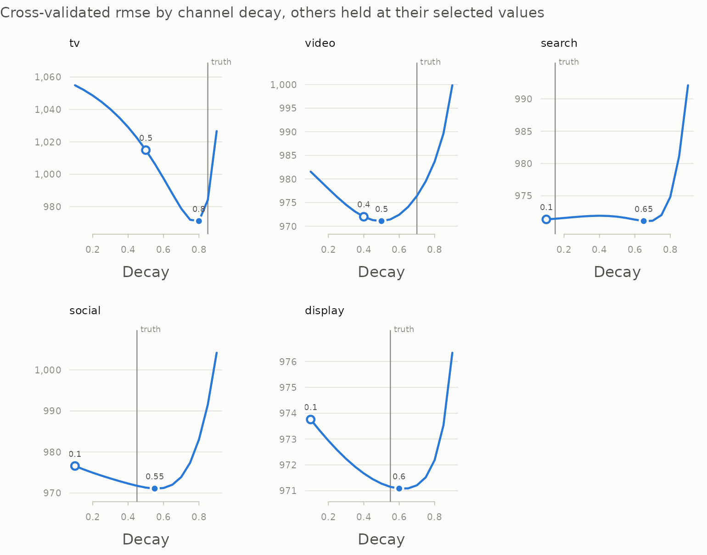

Decay and lag have to come from somewhere. Priors and vendor benchmarks are one answer. Cross-validation is another, and it has the advantage of being checkable: if the procedure works, it should recover a decay you planted in simulated data.
This vignette is about doing that correctly, because there is a tempting way to do it that does not work.
The objective that does not work
Here is a plausible-sounding procedure. Adstock the media series, fit a linear trend to the transformed series, extrapolate it one period ahead, and score it against the raw series. Grid-search decay and lag; take the best.
It sounds reasonable and it is broken, for a reason that is easy to miss: there is no dependent variable anywhere in that loop. The criterion never sees the KPI. It scores how smooth and trend-like the transformed media series is, which is a property of the filter, not evidence about the media.
Watch what it does on data where the true decay is 0.7:
set.seed(42)
n <- 156
spend <- pmax(0, rnorm(n, 500, 250))
truth <- 0.7
kpi <- 200 + 0.5 * adstock_geometric(spend, decay = truth) + rnorm(n, sd = 5)
no_kpi_objective <- function(x, max_lag, decay) {
z <- adstock_geometric(x, decay, max_lag = max_lag)
errs <- vapply(78:(n - 1), function(e) {
m <- lm(z[1:e] ~ seq_len(e))
(x[e + 1] - (coef(m)[1] + coef(m)[2] * (e + 1)))^2
}, numeric(1))
sqrt(mean(errs))
}
g <- expand.grid(max_lag = c(2, 5, 10, 20), decay = c(0.1, 0.5, 0.9))
g$error <- mapply(function(l, d) no_kpi_objective(spend, l, d),
g$max_lag, g$decay)
g[order(g$error), ]
#> max_lag decay error
#> 1 2 0.1 232.6
#> 2 5 0.1 232.6
#> 3 10 0.1 232.6
#> 4 20 0.1 232.6
#> 5 2 0.5 232.7
#> 9 2 0.9 232.8
#> 6 5 0.5 233.1
#> 7 10 0.5 233.2
#> 8 20 0.5 233.2
#> 10 5 0.9 234.1
#> 11 10 0.9 236.7
#> 12 20 0.9 241.7Two things are wrong here. The chosen decay is 0.1 against a truth of 0.7. And look at how little separates the contenders:
c(spread_across_whole_grid = max(g$error) / min(g$error) - 1,
spread_across_best_four = sort(g$error)[4] / min(g$error) - 1)
#> spread_across_whole_grid spread_across_best_four
#> 3.944e-02 5.913e-05The four best cells differ in the fifth significant figure, and the whole grid spans under 4%. There is almost no signal to select on, and what signal there is runs in a single direction: error rises monotonically with decay, because a harder-smoothed series is a worse predictor of a noisy raw one. The criterion is ranking filters by how much they smooth. It never sees the KPI, so it cannot rank them by anything else.
Putting the KPI in the loop
tune_carryover() scores each candidate
(max_lag, decay) by how well a model fitted on the
adstocked media predicts held-out KPI:
tuned <- tune_carryover(
spend, kpi,
max_lags = Inf,
decays = seq(0.05, 0.95, by = 0.05)
)
tuned
#>
#> ── Carryover tuning
#> rolling_origin resampling, 78 splits, 19 grid points
#> Best: decay = 0.7 (half-life 1.94 periods), max_lag = infinite
#> rmse (pooled) = 4.95364, std. error 0.357Recovered exactly. The profile shows how sharply the data identifies it — a clear valley here, which is what a well-identified carryover looks like:
plot(tuned, truth = truth)
And it is not a fluke of one decay value:
recover <- function(true_decay, seed = 1) {
set.seed(seed)
x <- pmax(0, rnorm(n, 500, 250))
y <- 200 + 0.5 * adstock_geometric(x, decay = true_decay) + rnorm(n, sd = 5)
t <- suppressWarnings(tune_carryover(
x, y, max_lags = Inf, decays = seq(0.05, 0.95, by = 0.05)))
c(true = true_decay, recovered = t$best$decay,
true_hl = half_life(true_decay), recovered_hl = t$best$half_life)
}
round(t(vapply(c(0.2, 0.35, 0.5, 0.7, 0.85), recover, numeric(4))), 3)
#> true recovered true_hl recovered_hl
#> [1,] 0.20 0.20 0.431 0.431
#> [2,] 0.35 0.35 0.660 0.660
#> [3,] 0.50 0.50 1.000 1.000
#> [4,] 0.70 0.70 1.943 1.943
#> [5,] 0.85 0.85 4.265 4.265This recovery test lives in the package’s own test suite. It is the check that the objective is measuring what it claims to.
Why slicing a fully adstocked series is legitimate
tune_carryover() adstocks the whole series once per grid
point and then cuts it into folds, rather than re-adstocking inside each
fold. That looks like leakage and is not, because the filter is strictly
causal:
z <- adstock_geometric(spend, decay = 0.7)
all.equal(z[1:40], adstock_geometric(spend[1:40], decay = 0.7))
#> [1] TRUE
all.equal(z[1:100], adstock_geometric(spend[1:100], decay = 0.7))
#> [1] TRUEThe adstock value at time t depends only on media at times ≤ t. So an assessment period’s regressor draws on training-period media — information genuinely available at prediction time — and never on future media. No KPI information crosses the boundary at any point. The package tests this invariant explicitly, precisely because the shortcut depends on it.
A correct objective is not the same as an easy problem
Everything above uses a single channel with no confounders. Real data is not like that, and it is worth seeing how much harder it gets before trusting a number.
mm_weekly has five correlated, flighted channels, a
price term, a trend and seasonality, and 156 weekly observations. Tune
each channel’s decay one at a time against raw revenue, and:
data(mm_weekly)
north <- mm_weekly[mm_weekly$geo == "north", ]
truth_params <- attr(mm_weekly, "truth")
grid <- seq(0.1, 0.9, by = 0.05)
channels <- names(truth_params$decay)
one_at_a_time <- vapply(channels, function(ch) {
suppressWarnings(tune_carryover(north[[ch]], north$revenue,
max_lags = Inf, decays = grid))$best$decay
}, numeric(1))
rbind(true = truth_params$decay[channels], recovered = one_at_a_time)
#> tv video search social display
#> true 0.85 0.70 0.15 0.45 0.55
#> recovered 0.80 0.25 0.35 0.10 0.45Some are close, some are badly off. Nothing is wrong with the objective — it recovered five out of five true decays a moment ago. The problem is the model it is being evaluated against: a univariate regression of revenue on one adstocked channel, with no controls and no saturation. That model attributes the trend, the price effect, seasonality and the other four channels’ work to whichever channel it is currently looking at, and the carryover that best predicts under those conditions is not the true one.
Residualising the KPI against the controls first helps, but not enough:
base <- lm(revenue ~ seq_len(nrow(north)) + price + seasonality + holiday,
data = north)
residualised <- vapply(channels, function(ch) {
suppressWarnings(tune_carryover(north[[ch]], residuals(base),
max_lags = Inf, decays = grid))$best$decay
}, numeric(1))
rbind(true = truth_params$decay[channels],
raw_kpi = one_at_a_time,
residualised = residualised)
#> tv video search social display
#> true 0.85 0.70 0.15 0.45 0.55
#> raw_kpi 0.80 0.25 0.35 0.10 0.45
#> residualised 0.85 0.40 0.30 0.10 0.45The lesson is not that cross-validation fails. It is that carryover is not separable from the rest of the specification, so tuning it one channel at a time against a model you do not intend to fit answers a question you did not ask.
Tuning every channel at once
tune_carryover_joint() puts all five channels and the
controls into one model and chooses each channel’s decay with the
others’ effects accounted for. It searches by coordinate descent — one
channel at a time, holding the rest, repeating until nothing moves — so
it costs a few sweeps of the one-channel grid rather than the full
five-dimensional grid:
controls <- data.frame(week = seq_len(nrow(north)), price = north$price,
seasonality = north$seasonality,
holiday = north$holiday)
joint <- tune_carryover_joint(north[channels], north$revenue,
controls = controls, decays = grid)
joint
#>
#> ── Joint carryover tuning
#> 5 channels, rolling_origin resampling, 78 splits; 3 sweeps, converged
#> rmse (pooled) = 971.083
#> channel max_lag decay half_life decay_1se
#> tv Inf 0.80 3.11 0.5
#> video Inf 0.50 1.00 0.4
#> search Inf 0.65 1.61 0.1
#> social Inf 0.55 1.16 0.1
#> display Inf 0.60 1.36 0.1
rbind(true = truth_params$decay[channels],
one_at_a_time = one_at_a_time,
residualised = residualised,
joint = joint$best$decay,
joint_1se = joint$best_1se$decay)
#> tv video search social display
#> true 0.85 0.70 0.15 0.45 0.55
#> one_at_a_time 0.80 0.25 0.35 0.10 0.45
#> residualised 0.85 0.40 0.30 0.10 0.45
#> joint 0.80 0.50 0.65 0.55 0.60
#> joint_1se 0.50 0.40 0.10 0.10 0.10Much closer, and the profiles show where the remaining doubt lies:
plot(joint, truth = truth_params$decay)
Television, video and social have clear valleys. Search’s profile barely moves across the whole range: the data cannot tell a search half-life of a fraction of a week from one of several, and the one-standard-error choice falls back to the short end, near the truth. That flatness is itself the finding, and a point estimate without the profile would hide it.
The model here is still linear in adstocked media, with no
saturation, so it is not the model the data came from. For carryover
tuned jointly with saturation and a model penalty, use the recipe steps
in vignette("tidymodels").
Reading the result
head(tuned$results, 5)
#> max_lag decay half_life metric std_err n_splits
#> 1 Inf 0.70 1.943 4.954 0.3569 78
#> 2 Inf 0.65 1.609 6.246 0.4035 78
#> 3 Inf 0.75 2.409 7.632 0.5700 78
#> 4 Inf 0.60 1.357 9.007 0.5957 78
#> 5 Inf 0.55 1.159 11.870 0.7785 78The results grid is worth looking at rather than just
taking best. If the metric is nearly flat across a wide
band of decay, the data does not identify carryover tightly and a
confident point estimate would be overstating things.
Two things in the output help with that. std_err is the
standard error of the per-split errors, which says how far apart two
candidates need to be before the difference means anything. And
best_1se applies the one-standard-error rule (Breiman et
al., 1984; Hastie, Tibshirani and Friedman, 2009): the shortest
carryover whose error is within one standard error of the minimum.
rbind(best = tuned$best, one_se = tuned$best_1se)
#> max_lag decay half_life metric std_err n_splits
#> best Inf 0.7 1.943 4.954 0.3569 78
#> one_se Inf 0.7 1.943 4.954 0.3569 78When the two agree, the data has spoken clearly. When they do not, the data cannot tell them apart, and the shorter carryover is the more conservative claim to put in front of a client — a long carryover flatters a channel by crediting it with sales weeks after it ran.
By default the metric is pooled: every out-of-sample
forecast across all splits is collected and metric_fn is
evaluated once, so rmse is the root mean squared forecast
error. aggregate = "mean" averages a per-split metric
instead, which is the tune convention; with one-period
assessment sets that turns any RMSE into a mean absolute error, because
the RMSE of a single point is its absolute error.
tune_carryover() warns when the winner is pinned to the
edge of the grid:
narrow <- tune_carryover(spend, kpi, max_lags = Inf,
decays = seq(0.1, 0.5, by = 0.1))
#> Warning: The chosen parameters sit on the edge of the grid.
#> • The selected decay (0.5) is the largest value in `decays`.
#> ℹ Widen the grid and re-run. A parameter pinned to a boundary usually means the
#> optimum is outside it, or that the series is too short to identify carryover
#> this long.
narrow$best$decay
#> [1] 0.5Here the truth is 0.7 and the grid stops at 0.5, so the optimum is outside it. The warning is the signal to widen the grid rather than to believe the answer.
The start of the series
Adstock starts from zero unless told otherwise, as if no media had ever run before the first week. For a slow channel that understates the early weeks:
steady <- rep(100, 8)
rbind(cold = adstock_geometric(steady, decay = 0.85),
warm = adstock_geometric(steady, decay = 0.85,
state = adstock_steady_state(steady, 0.85)))
#> [,1] [,2] [,3] [,4] [,5] [,6] [,7] [,8]
#> cold 15 27.75 38.59 47.8 55.63 62.29 67.94 72.75
#> warm 100 100.00 100.00 100.0 100.00 100.00 100.00 100.00adstock_steady_state() seeds the filter as though the
early average spend had always been running, and
warm_start = TRUE applies it to every candidate in
tune_carryover() and tune_carryover_joint().
Real pre-period spend, passed through adstock_state(), is
better still when you have it.
Sanity-check the answer against the data you have
window <- effective_window(tuned$best$decay, coverage = 0.90)
window
#> [1] 7The selected decay of 0.7 implies 7 periods before 90% of a burst’s effect has played out. Compare that against the series length: if the effective window approaches a large fraction of it, the parameter is not identified by the data no matter how confident the cross-validation looks. Here 7 periods against 156 is comfortable.
Resampling schemes
Both schemes are forward-only; neither ever trains on data that follows what it assesses.
rolling <- tune_carryover(spend, kpi, max_lags = Inf,
decays = seq(0.5, 0.9, by = 0.1),
scheme = "rolling_origin")
kfold <- tune_carryover(spend, kpi, max_lags = Inf,
decays = seq(0.5, 0.9, by = 0.1),
scheme = "k_fold_forward", k = 5)
c(rolling = rolling$best$decay, k_fold = kfold$best$decay)
#> rolling k_fold
#> 0.7 0.7"rolling_origin" grows the training window one period at
a time and gives many splits; "k_fold_forward" uses a
handful of contiguous forward blocks and is cheaper on long series.
For tuning carryover jointly with saturation and a model’s own
penalty, see vignette("tidymodels").
References
Bergmeir, C. and Benítez, J. M. (2012). On the use of cross-validation for time series predictor evaluation. Information Sciences, 191, 192–213.
Breiman, L., Friedman, J., Olshen, R. and Stone, C. (1984). Classification and Regression Trees. Wadsworth.
Hastie, T., Tibshirani, R. and Friedman, J. (2009). The Elements of Statistical Learning (2nd ed.). Springer.